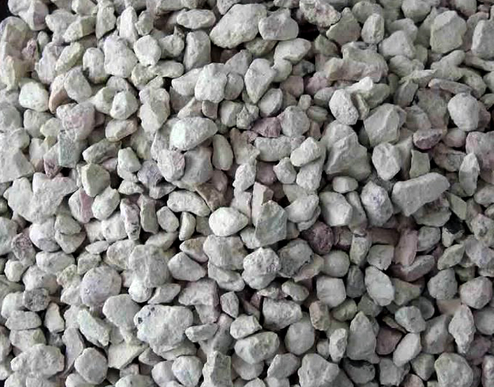
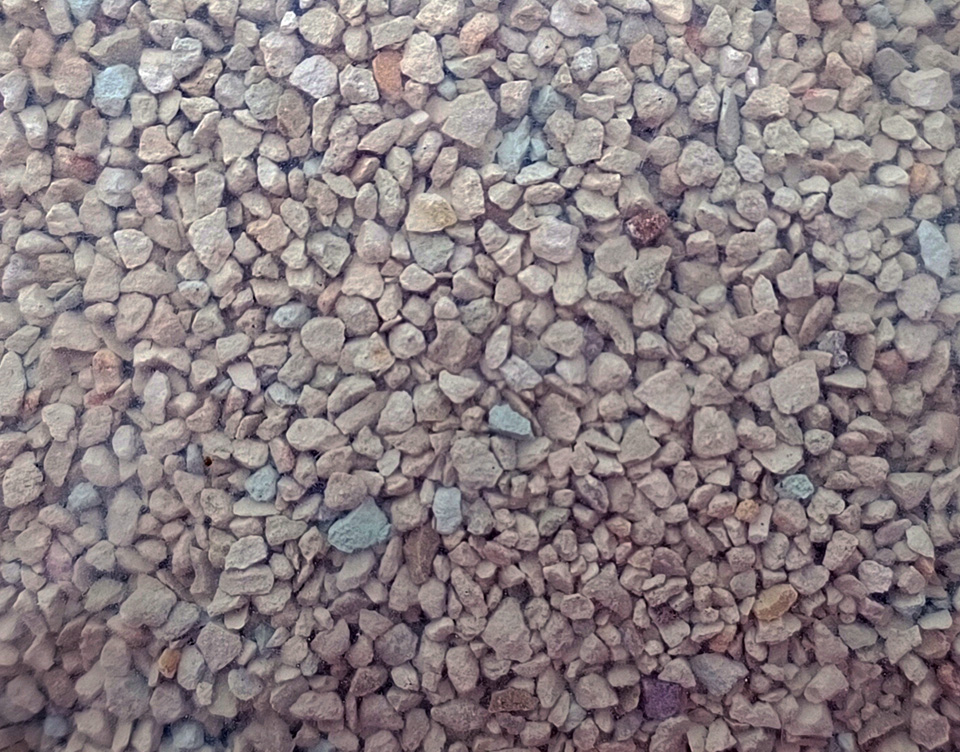
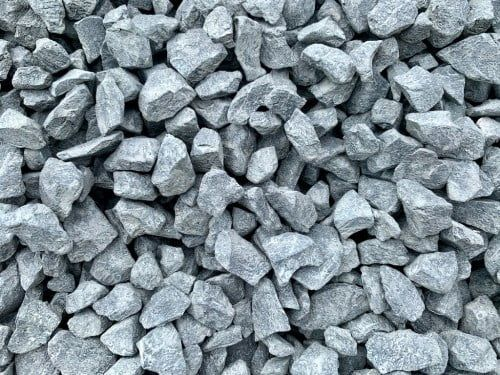

Bentonita
- Mejorando la Calidad del Suelo la bentonita, conocida por su capacidad de retención de agua y nutrientes, se ha ganado un lugar destacado en la agricultura como un agente de mejora del suelo. Su estructura altamente absorbente permite que retenga grandes cantidades de agua, lo que ayuda a mantener una humedad constante en el suelo y a reducir la necesidad de riego frecuente.
Además, la bentonita mejora la estructura del suelo, previniendo la compactación y mejorando la aireación, lo que favorece el crecimiento saludable de las raíces de las plantas.
También se utiliza como un agente de retención de nutrientes, ayudando a prevenir la lixiviación de fertilizantes y asegurando que estén disponibles para las plantas cuando más las necesitan. Con su capacidad para mejorar la calidad del suelo y aumentar la eficiencia del riego y la fertilización, la bentonita es una herramienta valiosa para los agricultores que buscan maximizar el rendimiento y la salud de sus cultivos.
Caliza
- Corrigiendo el pH del Suelo la caliza, un mineral compuesto principalmente por carbonato de calcio, desempeña un papel fundamental en la agricultura como un agente para corregir el pH del suelo. Cuando el suelo se vuelve demasiado ácido, la adición de caliza ayuda a neutralizar el pH y a restablecer un equilibrio saludable en el suelo. Esto es crucial para optimizar la disponibilidad de nutrientes para las plantas, ya que un pH adecuado permite una absorción más eficiente de los nutrientes esenciales.
Además de corregir el pH del suelo, la caliza también ayuda a mejorar su estructura, promoviendo una mayor aireación y drenaje, lo que favorece el crecimiento saludable de las raíces de las plantas. Con su capacidad para corregir el pH del suelo y mejorar su estructura, la caliza es una herramienta invaluable para los agricultores que buscan maximizar el rendimiento y la calidad de sus cultivos.
Zeolita
- Transformando el Cultivo la zeolita, con su capacidad de retención de agua y nutrientes. Utilizada como un agente de retención de humedad en el suelo, la zeolita ayuda a mejorar la disponibilidad de agua para las plantas, especialmente en regiones áridas o durante períodos de sequía.
Su estructura porosa permite la liberación gradual de nutrientes esenciales como potasio, calcio y magnesio, proporcionando un ambiente óptimo para el crecimiento de las plantas.
Además, la zeolita ayuda a mejorar la aireación del suelo y a reducir la compactación, lo que favorece el desarrollo saludable de las raíces. Con su capacidad para mejorar la eficiencia del riego y la fertilización, la zeolita se ha convertido en una herramienta indispensable para los agricultores que buscan aumentar la productividad y la sostenibilidad de sus cultivos.
Materias primas

Zeolita
¡Optimiza tu cultivo con Zeolita!
Descubre cómo la zeolita puede mejorar la retención de agua y nutrientes en tu suelo.
¡Solicita una cotización ahora y lleva tus cultivos al siguiente nivel!

Bentonita
¡Mejora la salud de tu suelo con Bentonita!
Aprovecha los beneficios de la bentonita para mantener una humedad constante en tu suelo y mejorar la estructura para un crecimiento saludable de las plantas.
¡Solicita una cotización hoy mismo y transforma tus cultivos!

Caliza
¡Equilibra el pH de tu suelo con Caliza!
Corrige la acidez de tu suelo y optimiza la disponibilidad de nutrientes para tus plantas.
¡Solicita una cotización de caliza ahora y asegura un crecimiento saludable y abundante para tus cultivos!